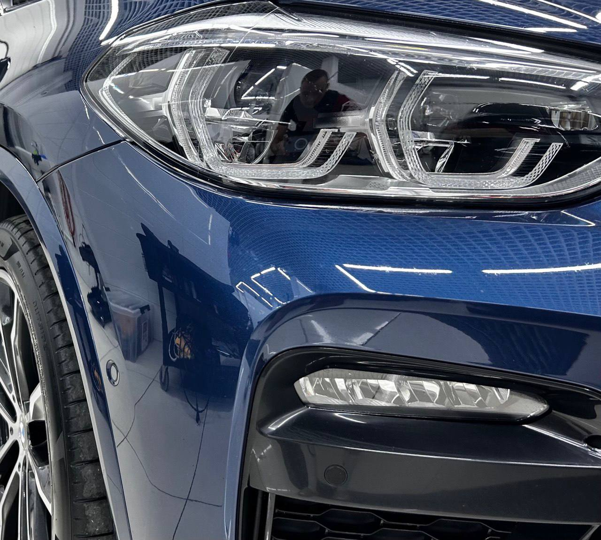
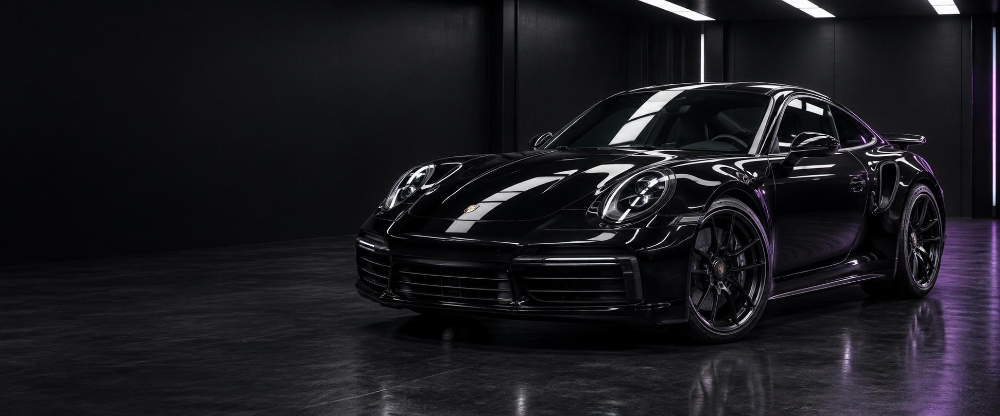
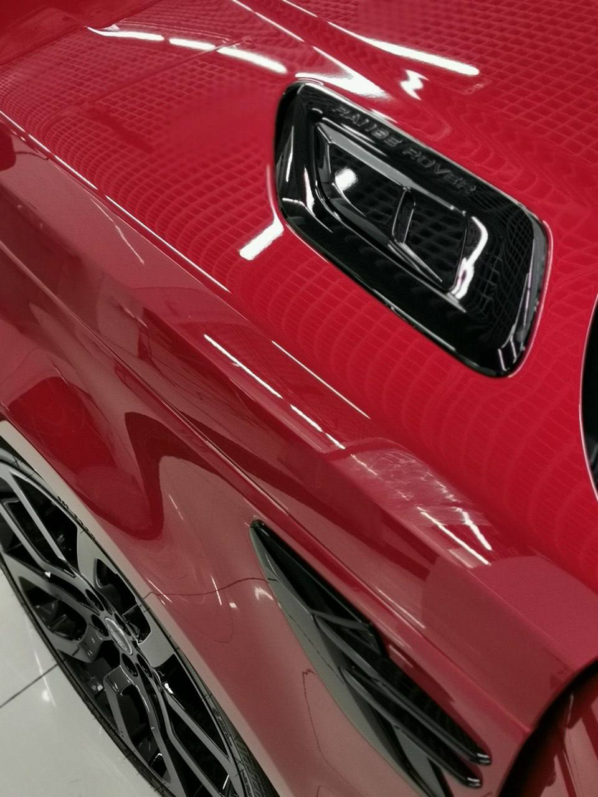
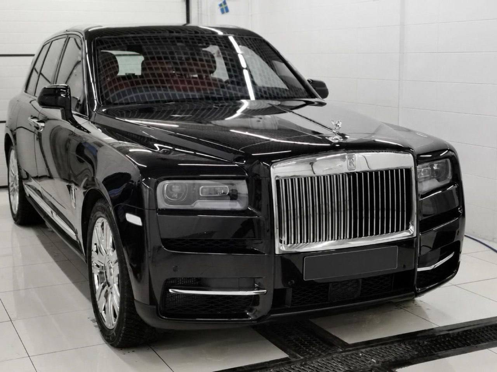
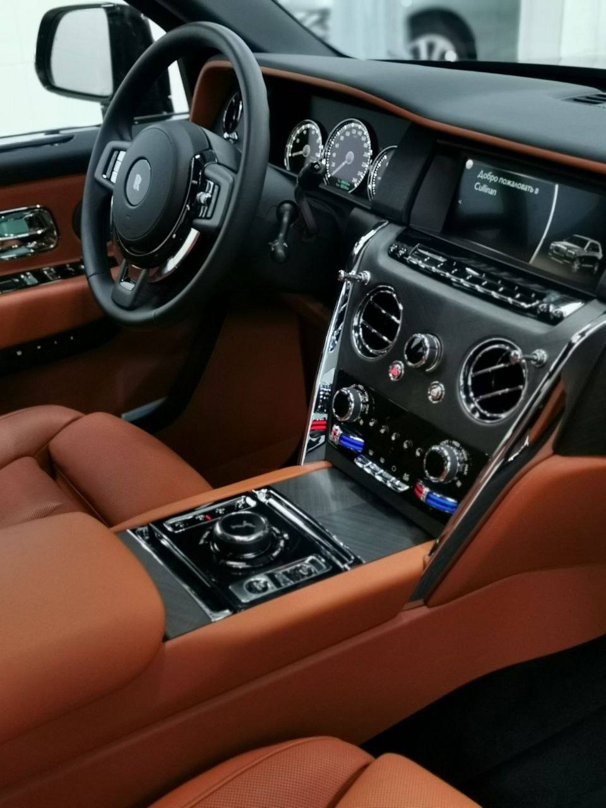

ЗащитаОклейка зоны риска
Защитная плёнка для участков кузова, наиболее подверженных сколам.

Чистота. Глубина цвета. Защита.
Детейлинг в Екатеринбурге.
Внешний вид, который радует.
Защита, которая работает.
Четыре основных направления · начальные цены

ЗащитаЗащитная плёнка для участков кузова, наиболее подверженных сколам.

КузовУменьшить заметность мелких царапин, вернуть блеск и глубину цвета.

ЗащитаПодчеркнуть блеск и облегчить повседневный уход за кузовом.

СалонОчистить обивку и вернуть ощущение свежести внутри автомобиля.
Больше вариантов ухода и защиты в полном каталоге.
Все услугиАвтомобиль — больше, чем способ добраться из точки А в точку Б.
White Studio — детейлинг в Екатеринбурге. Здесь начинается внимание к тому, что делает автомобиль вашим: цвету, фактуре, чистоте и ощущениям за рулём.
Детейлинг помогает сохранить внешний вид автомобиля и выбрать подходящий уход за кузовом и салоном.
Познакомиться со студиейАвтомобили в White Studio.
Выберите альбом, чтобы рассмотреть кузов и детали.
Выберите услугу или начните с вопроса.
Впечатления, которые
говорят больше слов.
Добавим реальные отзывы клиентов White Studio
и ссылки на площадки, где их можно прочитать.
Отзывы ещё не добавлены
Екатеринбург
Адрес, телефон и график работы
будут добавлены в ближайшее время.